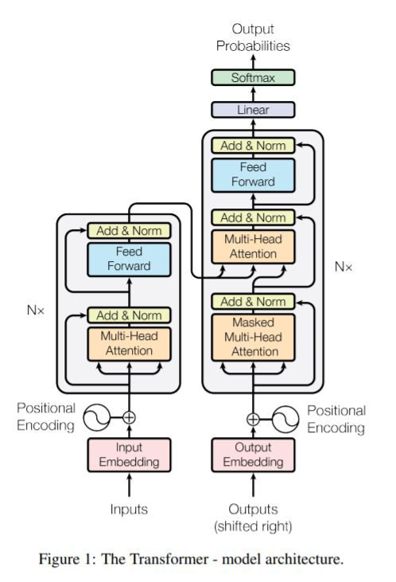
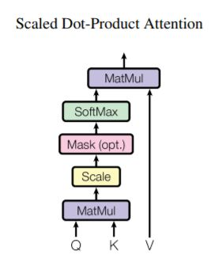
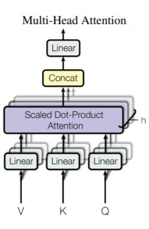
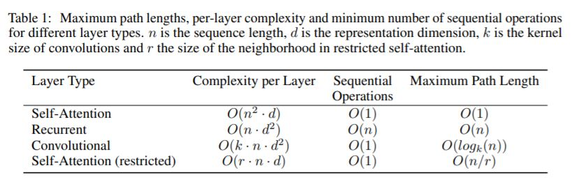
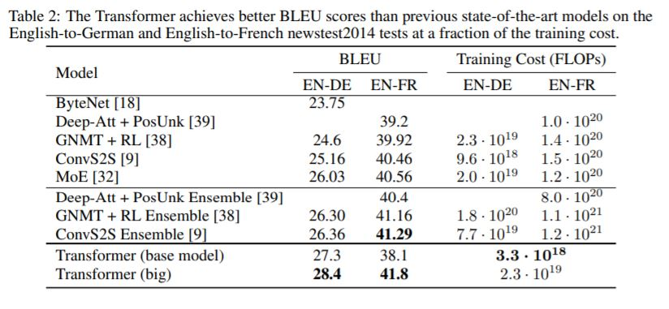
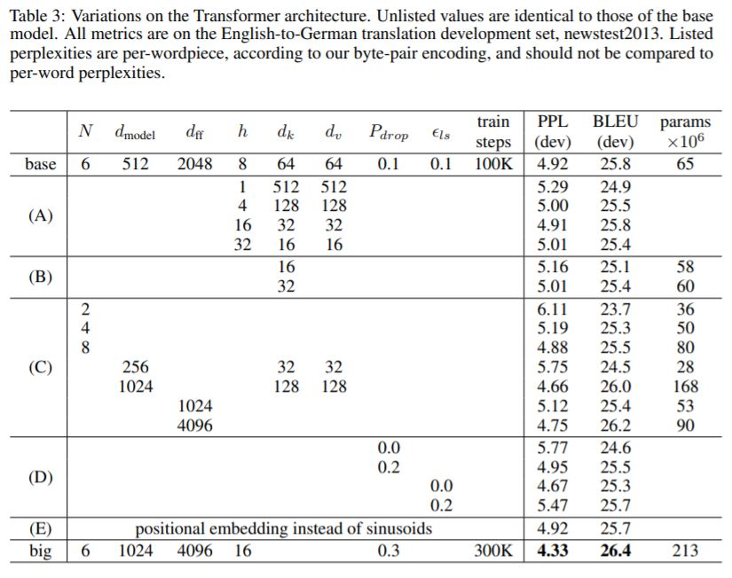
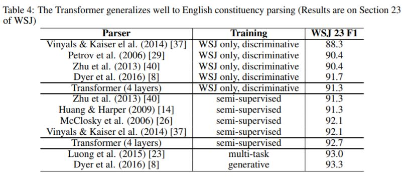

Attention Is All You Need(NIPS 2017)
Abstract
1.主流序列转录模型
（1）序列转录
·输入一个序列，输出另一个序列。
·举例：机器翻译
（2）主流序列转录模型的设计
①基于复杂的循环架构。
②包含编码器、解码器的卷积神经网络。
（3）当前表现最佳的序列转录模型
·通过注意力机制，连接编码器、解码器。
2.新型简单架构——Transformer的提出
（1）架构设计
·仅基于注意力机制，完全摒弃循环和卷积。
（2）模型在机器翻译任务上的表现
·高性能，并行化程度提高，训练时间大幅减少。
·WMT 2014 English-to-German翻译任务：获得28.4 BLEU score，比之前最佳的结果提升2 BLEU。
·WMT 2014 English-to-French翻译任务：获得最新的单模型SOTA分数41.8 BLEU，只需在8块GPU上训练3.5天。
（3）模型的泛化能力
·提供大型/有限训练数据，Transformer在英语成分分析(English constituency parsing)上表现好，说明Transformer可以较好地泛化到其他任务。
1 Introduction
1.循环神经网络
（1）序列建模与转录任务的SOTA模型
·循环神经网络（特别是长短时记忆、门控循环神经网络），被坚固地确定为序列建模与转录任务（如：语言建模、机器翻译）的SOTA模型。
·大量尝试持续推动着循环语言模型、编码器-解码器架构的边界。
（2）模型的不足
·循环模型沿着输入/输出符号的位置进行计算，并将符号位置与计算时间步对齐。
·循环模型通过前序隐藏状态\(h_{t - 1}\)以及位置\(t\)的输入，生成一系列隐藏状态\(h_t\)。
·循环模型的序列化本质阻碍了训练样本的并行化。
·近期工作通过分解技巧、条件计算，实现了计算效率和模型性能的提高，但序列化计算的基本限制仍然存在。
2.注意力机制
·作为序列建模与转录模型的不可或缺部分，可以建模两个元素的依赖关系，并且不受它们在输入/输出序列中的距离的影响。
·在几乎所有情况下，注意力机制与循环神经网络协同使用。
3.本文提出的Transformer架构
·避开循环架构，完全依赖于注意力机制，以描绘输入、输出间的全局依赖关系。
·大幅度提升并行化程度，并实现更高的翻译质量。
2 Background
1.使用卷积减少序列化计算
（1）模型举例：Extended Neural GPU/ByteNet/ConvS2S。
（2）共同点：使用卷积神经网络作为基本块，并行计算各个输入/输出位置的隐藏表示。
（3）不足：随着两个输入/输出位置之间距离的增大，计算二者关联的操作数量也会增大，这导致学习远距离位置之间的依赖性更加困难。 （4）Transformer对上述问题的解决：只需常数操作即可获得任意两个位置之间的关联性，代价是由注意力权重平均(averaging attention-weighted positions)导致的有效分辨率下降。
2.自注意力/内部注意力机制
·一种注意力机制，联系一个输入序列的不同位置，以生成序列的一种表示。
·成功应用于大量任务，如阅读理解、抽象摘要、文本蕴含，以及学习任务相关的序列表示等。
3.端到端记忆网络
·基于循环注意力机制，而非序列对齐的循环。
·在单语言问题回答、语言建模任务上表现较好。
4.Transformer架构
·第一个完全依赖于自注意力机制的模型，不使用序列对齐的RNN或卷积。
3 Model Architecture
1.最优竞争力的序列转录模型——编码器-解码器架构
·编码器：将输入序列\((x_1, \cdots, x_n)\)映射为连续表示\((z_1, \cdots, z_n)\)。
·解码器：给定\(\mathbf{z}\)，一次一个元素地生成输出序列\((y_1, \cdots, y_m)\)。
·解码器的每一步骤都是自回归的，将之前已生成的符号作为额外的输入。
2.Transformer架构

·编码器、解码器：均使用堆叠的子注意力机制，以及逐点(point-wise)全连接网络。
（1）编码器
·共6个相同层次。
·每个层次有两个子层，分别是：多头自注意力机制、逐位置全连接前馈神经网络。
·每个子层均使用残差连接，以及层正则化(layer normalization)，即LayerNorm(x + Sublayer(x))，其中Sublayer(x)即为子层实现的函数。
[注1]Batchnorm针对batch作正则化，Layernorm针对样本作正则化。
[注2]在时序模型中，Layernorm比Batchnorm更常用，原因是各序列样本长度可能不同，故Batchnorm抖动较大，且不能处理长于训练序列的测试序列。
·模型的每个子层，以及嵌入(embedding)层，输出的维度均为\(d_{model} = 512\)。
[注]在各个层次中，每个词元均使用512个维度进行表示。
（2）注意力机制
①注意力函数
·将一个查询(query)，以及一组键值对(key-value pair)，映射到一个输出。
·输出：value的加权和，权重由query和相应key的相似度函数进行计算。
②缩放点积注意力(Scaled Dot-Product Attention)

·输入：query, key的维度均为\(d_k\)，value的维度均为\(d_v\)。
·计算步骤：首先计算query和所有key的相似度，对每个相似度除以\(\sqrt{d_k}\)，然后应用softmax函数以获得value的权重。
·实际运行：将一组query打包成一个矩阵\(Q\)，并将key, value分别记为矩阵\(K, V\)。
·数学公式：\(Attention(Q, K, V) = softmax(\frac{QK^T}{\sqrt{d_k}})V\)
[理解]
设query个数为\(n\)，键值对个数为\(m\)，则各矩阵的形状为：
\(Q_{n \times d_k}, K_{m \times d_K}, V_{m \times d_v}\)
·缩放点积注意力：在点击注意力基础上添加缩放因子\(\frac{1}{\sqrt{d_k}}\)。
·加性注意力：使用带一个隐藏层的前馈神经网络计算相似度。
·点积注意力：计算速度更快、空间效率更高，原因是矩阵乘法可以高度优化、并行。
·两种注意力的性能：加性注意力的性能优于不含缩放因子的点积注意力的性能。
·设计缩放因子的原因：对于较大的\(d_k\)，点积数值也会增大，导致softmax函数梯度很小。
（3）多头注意力(Multi-Head Attention)

①架构
·对query, key, value进行\(h\)次不同的线性投影，分别投影到\(d_k, d_k, d_v\)维度。
·各个投影可通过学习得到，可以并行计算注意力函数，获得\(d_v\)维度的输出值。
·输出值先合并，再投影，获得最终输出。
②作用
·允许模型同时关注不同位置、不同表示空间的信息。
③数学公式
·\(MultiHead(Q, K, V) = Concat(head_1, \cdots, head_h)W^O\)
·\(head_i = Attention(QW_i^Q, KW_i^K, VW_i^V)\)
·\(W_i^Q \in \mathbf{R}^{d_{model} \times d_k}, W_i^K \in \mathbf{R}^{d_{model} \times d_k},
W_i^V \in \mathbf{R}^{d_{model} \times d_v},
W^O \in \mathbf{R}^{hd_v \times d_{model}}\)
·实验参数设置：\(h = 8, d_k = d_v = \frac{d_{model}}{h} = 64\)
·由于每个head的维度均降低，因此multi-head注意力的总计算代价与single-head注意力相当。
（4）位置相关的前馈神经网络(PositionWise Feed-Forward Network)
·编码器/解码器的每个层次都包含一个全连接前馈神经网络。
·该网络针对每个位置分别进行相同的计算。
·数学公式：\(FFN(x) = max(0, xW_1 + b_1)W_2 + b_2\)
·上述公式中，\(max(0, xW_1 + b_1)\)即表示对\(xW_1 + b_1\)应用relu函数。
·本质：两个卷积核大小为\(1\)的卷积层，分别针对每个位置/词元进行作用。
·维度变化：\(x \rightarrow xW_1 + b_1\)由\(512\)维变为\(2048\)维；\(xW_1 + b_1 \rightarrow max(0, xW_1 + b_1)W_2 + b_2\)由\(2048\)维恢复到\(512\)维。
[注]
·本质上，MLP的作用是语义空间转换。
（5）嵌入与Softmax
·使用预训练嵌入，将输入、输出词元(token)转化为\(d_{model}\)维度的向量。
·使用预训练线性转化、softmax函数，转化解码器输出，以预测下一词元的概率。
·两个embedding层、pre-softmax线性变换共享权重。
·由于维度较大时，各权重偏小，因此对于embedding层，将权重乘以\(\sqrt{d_{model}}\)。
（6）位置编码
·注意力机制本身不具有序列信息，通过位置编码注入词元相对/绝对位置信息。
·在编码器、解码器图示的底部，位置编码与输入embedding相加。
·位置编码与embedding具有相同的维度\(d_{model}\)，可直接相加。
·本实验的位置编码：
\(PE_{(pos, 2i)} = sin(\frac{pos}{10000^{\frac{2i}{d_{model}}}})\)
\(PE_{(pos, 2i + 1)} = cos(\frac{pos}{10000^{\frac{2i}{d_{model}}}})\)
其中，\(pos\)表示位置，\(i\)表示维度序号。
4 Why Self-Attention
1.自注意力机制与循环层、卷积层的对比

·\(n\)表示序列长度，\(d\)表示向量的维度（即\(d_{model}\)）。
·由于矩阵乘法高度并行化，因此自注意力机制的顺序化操作数可视为\(O(1)\)。
·前向、后向路径的长度越短，越容易学习到长距离依赖关系。
·循环层的问题：前向/反向信号的传递，最大路径长度为\(O(n)\)，且顺序化操作数为\(O(n)\)，并行化程度低。
·限制自注意力：为了提升长序列任务的表现，自注意力可以进行限制，只考虑大小为\(r\)的邻域；此时，最大路径长度变为\(O(\frac{n}{r})\)。
2.结论
·自注意力模型更容易理解：独立的attention heads可以学习执行不同的任务，它们表现出的行为与句子语法、语义结构相关。
5 Training
1.训练数据和批量化
·数据集：WMT 2014 English-German标准数据集，共包含约4.5百万个句子对。
·各句子使用byte-pair encoding进行编码，对于约37000个词元使用共享的源-目标词汇表。
·英语译法语任务：在WMT 2014 English-French数据集上训练，约包含36M个句子及大小为32000的word-piece vocabulary。
·每个training batch包含一组句子对，这组句子对共有约25000个源词元，以及25000个目标词元。
2.硬件和schedule
·设备：8块P100显卡。
·基本模型训练用时：每个训练步骤需0.4秒，共训练100, 000步，0.5天。
·大型模型训练用时：每个训练步骤需1.0秒，共训练300, 000个步骤，3.5天。
3.优化器
·优化器：使用超参数分别为\(\beta_1 = 0.9, \beta_2 = 0.98, \epsilon = 10^{-9}\)的Adam优化器。
·学习率：\(lrate = d_{model}^{-0.5}\cdot min(step\_num^{-0.5}, step\_num \cdot warmup\_steps^{-1.5})\)
·首先，学习率线性增长；随后，学习率逐步下降。
·实验使用的warm_up steps：4000步。
4.正则化
（1）残差dropout
·先对子层的输出进行dropout，再将其与子层输入相加，最后进行正则化。
·对于编码器、解码器中embedding与位置编码之和，均使用dropout。
·实验使用的dropout rate：\(P_{drop} = 0.1\)。
（2）标签平滑(label smoothing)
·方法：将\(\epsilon_{ls} = 0.1\)作为正确词元的概率阈值。
·结果：模型更不易理解，训练结果更不确定，但是精度、BLEU分数有所提升。
6 Results
1.机器翻译

2.模型变种

·目的：评估Transformer各组件的作用。
·方法：使用束搜索(beam search)，不使用checkpoint平均。
·变量：attention head的数目、attention key-value的维度。
·更改变量时，保持总计算量不变。
·结果：单个head、过多head均导致模型性能降低；降低注意力key的规模\(d_k\)会损害模型的质量。
·思考：确定相似度不是容易的，一个比点积更复杂的相似度函数可能带来好处。
·模型规模：更大的模型性能更佳。
·dropout：对于防止过拟合非常有帮助。
·learned位置编码：与正弦位置编码效果相当。
3.英语成分分析

·目的：评估Transformer是否能泛化到其他任务。
·英语成分分析任务的挑战：输出有明显的结构约束，并且明显长于输入。
·结论：即使缺乏针对特定任务的微调，transformer模型表现极好，获得了比所有已知模型（Recurrent Neural Network Grammar除外）更好的性能。
7 Conclusion
1.工作总结——Transformer架构
（1）模型简介
·第一个完全基于注意力机制的序列转录模型。
·使用多头注意力机制，替代编码器-解码器架构中最常用的循环层。
（2）机器翻译任务的表现
·与基于循环层或卷积层的架构相比，训练明显加快。
·在WMT 2014 English-to-German/WMT 2014 English-to-French翻译任务上均取得新的SOTA。
2.未来展望
（1）Transformer应用于其他任务
·将Transformer应用于文本以外的输入/输出形式。
·研究局部、有限的注意力机制，以高效地处理图片、音频、视频等输入/输出形式。
（2）减少生成结果的序列化程度